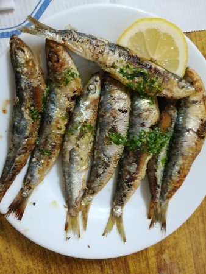

Sarde alla Griglia

Description
Fresh sardines are tasty and have a firm texture, and very different in flavour compared to canned ones. They are excellent simply roasted and served with lemon.
Ingredients
- 1kg of fresh sardines, clean and headless
- olive oil
- salt and ground black pepper
- 3 tablespoons of fresh chopped pasrlsey and lemons slices for garnishment
Steps
- Preheat the grill. Wash the sardines on the inside are on the outside with cold water. Dry them lightly with kitchen paper.
- Spread the with olive oil and season them generously with salt and pepper. Grill them on one side for about 3-4 minutes.
- Turn them to the other side and grill the for 3-4 more minutes or until they start to brown. Serve immediatelt, garnished with chopped parsley and lemon slices.